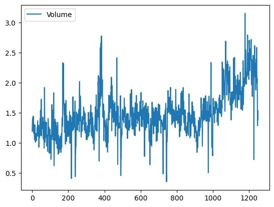

import pandas as pd
import numpy as np
from matplotlib.pyplot import subplots
import statsmodels.api as sm
from ISLP import load_data
from ISLP.models import (ModelSpec as MS, summarize)
from ISLP import confusion_table
from ISLP.models import contrast
from sklearn.discriminant_analysis import \
(LinearDiscriminantAnalysis as LDA ,
QuadraticDiscriminantAnalysis as QDA)
from sklearn.naive_bayes import GaussianNB
from sklearn.neighbors import KNeighborsClassifier
from sklearn.preprocessing import StandardScaler
from sklearn.model_selection import train_test_split
from sklearn.linear_model import LogisticRegression
Smarket = load_data('Smarket')
Smarket
|
Year |
Lag1 |
Lag2 |
Lag3 |
Lag4 |
Lag5 |
Volume |
Today |
Direction |
| 0 |
2001 |
0.381 |
-0.192 |
-2.624 |
-1.055 |
5.010 |
1.19130 |
0.959 |
Up |
| 1 |
2001 |
0.959 |
0.381 |
-0.192 |
-2.624 |
-1.055 |
1.29650 |
1.032 |
Up |
| 2 |
2001 |
1.032 |
0.959 |
0.381 |
-0.192 |
-2.624 |
1.41120 |
-0.623 |
Down |
| 3 |
2001 |
-0.623 |
1.032 |
0.959 |
0.381 |
-0.192 |
1.27600 |
0.614 |
Up |
| 4 |
2001 |
0.614 |
-0.623 |
1.032 |
0.959 |
0.381 |
1.20570 |
0.213 |
Up |
| ... |
... |
... |
... |
... |
... |
... |
... |
... |
... |
| 1245 |
2005 |
0.422 |
0.252 |
-0.024 |
-0.584 |
-0.285 |
1.88850 |
0.043 |
Up |
| 1246 |
2005 |
0.043 |
0.422 |
0.252 |
-0.024 |
-0.584 |
1.28581 |
-0.955 |
Down |
| 1247 |
2005 |
-0.955 |
0.043 |
0.422 |
0.252 |
-0.024 |
1.54047 |
0.130 |
Up |
| 1248 |
2005 |
0.130 |
-0.955 |
0.043 |
0.422 |
0.252 |
1.42236 |
-0.298 |
Down |
| 1249 |
2005 |
-0.298 |
0.130 |
-0.955 |
0.043 |
0.422 |
1.38254 |
-0.489 |
Down |
1250 rows × 9 columns
Smarket.drop(columns=["Direction"]).corr()
|
Year |
Lag1 |
Lag2 |
Lag3 |
Lag4 |
Lag5 |
Volume |
Today |
| Year |
1.000000 |
0.029700 |
0.030596 |
0.033195 |
0.035689 |
0.029788 |
0.539006 |
0.030095 |
| Lag1 |
0.029700 |
1.000000 |
-0.026294 |
-0.010803 |
-0.002986 |
-0.005675 |
0.040910 |
-0.026155 |
| Lag2 |
0.030596 |
-0.026294 |
1.000000 |
-0.025897 |
-0.010854 |
-0.003558 |
-0.043383 |
-0.010250 |
| Lag3 |
0.033195 |
-0.010803 |
-0.025897 |
1.000000 |
-0.024051 |
-0.018808 |
-0.041824 |
-0.002448 |
| Lag4 |
0.035689 |
-0.002986 |
-0.010854 |
-0.024051 |
1.000000 |
-0.027084 |
-0.048414 |
-0.006900 |
| Lag5 |
0.029788 |
-0.005675 |
-0.003558 |
-0.018808 |
-0.027084 |
1.000000 |
-0.022002 |
-0.034860 |
| Volume |
0.539006 |
0.040910 |
-0.043383 |
-0.041824 |
-0.048414 |
-0.022002 |
1.000000 |
0.014592 |
| Today |
0.030095 |
-0.026155 |
-0.010250 |
-0.002448 |
-0.006900 |
-0.034860 |
0.014592 |
1.000000 |
Smarket.plot(y='Volume')
<Axes: >

allvars = Smarket.drop(columns=["Today", "Year", "Direction"])
design = MS(allvars)
X = design.fit_transform(Smarket)
y = Smarket.Direction == "Up"
glm = sm.GLM(y, X, family=sm.families.Binomial())
results = glm.fit()
summarize(results)
|
coef |
std err |
z |
P>|z| |
| intercept |
-0.1260 |
0.241 |
-0.523 |
0.601 |
| Lag1 |
-0.0731 |
0.050 |
-1.457 |
0.145 |
| Lag2 |
-0.0423 |
0.050 |
-0.845 |
0.398 |
| Lag3 |
0.0111 |
0.050 |
0.222 |
0.824 |
| Lag4 |
0.0094 |
0.050 |
0.187 |
0.851 |
| Lag5 |
0.0103 |
0.050 |
0.208 |
0.835 |
| Volume |
0.1354 |
0.158 |
0.855 |
0.392 |
probs = results.predict()
probs
array([0.50708413, 0.48146788, 0.48113883, ..., 0.5392683 , 0.52611829,
0.51791656])
labels = np.array(["Up" if n > 0.5 else "Down" for n in probs])
labels
array(['Up', 'Down', 'Down', ..., 'Up', 'Up', 'Up'], dtype='<U4')
confusion_table(labels, Smarket.Direction)
| Truth |
Down |
Up |
| Predicted |
|
|
| Down |
145 |
141 |
| Up |
457 |
507 |
train = (Smarket["Year"] < 2005)
Smarket_train = Smarket[train]
Smarket_test = Smarket[~train]
X_train, X_test = X[train], X[~train]
y_train, y_test = y[train], y[~train]
train_glm = sm.GLM(y_train, X_train, family=sm.families.Binomial())
results = train_glm.fit()
probs = results.predict(exog=X_test)
probs
998 0.528220
999 0.515669
1000 0.522652
1001 0.513854
1002 0.498334
...
1245 0.483637
1246 0.506048
1247 0.516658
1248 0.516124
1249 0.508072
Length: 252, dtype: float64
labels = np.array([True if n > 0.5 else False for n in probs])
confusion_table(labels, y_test)
| Truth |
False |
True |
| Predicted |
|
|
| False |
77 |
97 |
| True |
34 |
44 |
X_train = (Smarket[train])[["Lag1", "Lag2"]]
y_train = (Smarket[train]).Direction == "Up"
X_test = (Smarket[~train])[["Lag1", "Lag2"]]
y_test = (Smarket[~train]).Direction == "Up"
lda = LDA(store_covariance=True)
lda.fit(X_train, y_train)
LinearDiscriminantAnalysis(store_covariance=True)
In a Jupyter environment, please rerun this cell to show the HTML representation or trust the notebook.
On GitHub, the HTML representation is unable to render, please try loading this page with nbviewer.org.lda.means_, lda.priors_
(array([[ 0.04279022, 0.03389409],
[-0.03954635, -0.03132544]]),
array([0.49198397, 0.50801603]))
lda_pred = lda.predict(X_test)
confusion_table(lda_pred, y_test)
| Truth |
False |
True |
| Predicted |
|
|
| False |
35 |
35 |
| True |
76 |
106 |
lda_prob = lda.predict_proba(X_test)
0.5202349505356155
qda = QDA(store_covariance=True)
qda.fit(X_train, y_train)
QuadraticDiscriminantAnalysis(store_covariance=True)
In a Jupyter environment, please rerun this cell to show the HTML representation or trust the notebook.
On GitHub, the HTML representation is unable to render, please try loading this page with nbviewer.org.qda.means_, qda.priors_
(array([[ 0.04279022, 0.03389409],
[-0.03954635, -0.03132544]]),
array([0.49198397, 0.50801603]))
qda.covariance_
[array([[ 1.50662277, -0.03924806],
[-0.03924806, 1.53559498]]),
array([[ 1.51700576, -0.02787349],
[-0.02787349, 1.49026815]])]
(qda.predict(X_test) == y_test).mean()
0.5992063492063492
NB = GaussianNB()
NB.fit(X_train, y_train)
GaussianNB()
In a Jupyter environment, please rerun this cell to show the HTML representation or trust the notebook.
On GitHub, the HTML representation is unable to render, please try loading this page with nbviewer.org.NB.theta_, NB.var_
(array([[ 0.04279022, 0.03389409],
[-0.03954635, -0.03132544]]),
array([[1.50355429, 1.53246749],
[1.51401364, 1.48732877]]))
(NB.predict(X_test) == y_test).mean()
0.5952380952380952
knn1 = KNeighborsClassifier(n_neighbors=1)
knn1.fit(X_train, y_train)
(knn1.predict(X_test) == y_test).mean()
KNeighborsClassifier(n_neighbors=1)
In a Jupyter environment, please rerun this cell to show the HTML representation or trust the notebook.
On GitHub, the HTML representation is unable to render, please try loading this page with nbviewer.org.knn3 = KNeighborsClassifier(n_neighbors=3)
knn3.fit(X_train, y_train)
(knn3.predict(X_test) == y_test).mean()
0.5317460317460317
Caravan = load_data('Caravan')
Purchase = Caravan.Purchase
Purchase.value_counts()
Purchase
No 5474
Yes 348
Name: count, dtype: int64
caravan_df = Caravan.drop(columns=["Purchase"])
scaler = StandardScaler(copy=True)
scaler.fit(caravan_df)
X_std = scaler.transform(caravan_df)
pd.DataFrame(X_std, columns=caravan_df.columns).std()
MOSTYPE 1.000086
MAANTHUI 1.000086
MGEMOMV 1.000086
MGEMLEEF 1.000086
MOSHOOFD 1.000086
...
AZEILPL 1.000086
APLEZIER 1.000086
AFIETS 1.000086
AINBOED 1.000086
ABYSTAND 1.000086
Length: 85, dtype: float64
(X_train, X_test, y_train, y_test) = train_test_split(caravan_df, Purchase, test_size=1000, random_state=0)
knn1 = KNeighborsClassifier(n_neighbors=1)
knn1.fit(X_train, y_train)
(knn1.predict(X_test) == y_test).mean()
0.879
knn3 = KNeighborsClassifier(n_neighbors=3)
knn3.fit(X_train, y_train)
(knn3.predict(X_test) == y_test).mean()
0.923
confusion_table(knn1.predict(X_test), y_test)
| Truth |
No |
Yes |
| Predicted |
|
|
| No |
874 |
62 |
| Yes |
59 |
5 |
logit = LogisticRegression(C=1e10, solver='liblinear')
logit.fit(X_train, y_train)
logit_pred = logit.predict(X_test)
confusion_table(logit_pred, y_test)
| Truth |
No |
Yes |
| Predicted |
|
|
| No |
931 |
67 |
| Yes |
2 |
0 |
logit = LogisticRegression(C=1e10 , solver='liblinear')
logit.fit(X_train , y_train)
logit_pred = logit.predict_proba(X_test)
logit_labels = np.where(logit_pred [:,1] > 0.15, 'Yes', 'No')
confusion_table(logit_labels , y_test)
| Truth |
No |
Yes |
| Predicted |
|
|
| No |
876 |
49 |
| Yes |
57 |
18 |